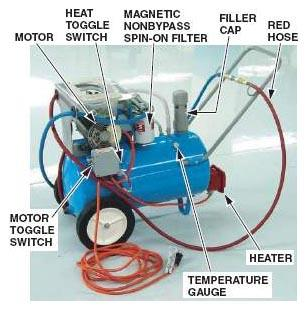
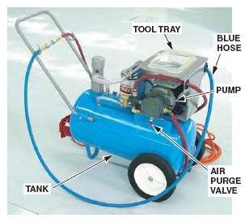

ATF Cooler Cleaner (89-022)
Reference number: 89-022
ATF COOLER CLEANER
TECHNICAL SERVICE BULLETIN
| HONDA: | Vehicles With an In-Radiator ATF Cooler - ALL |
| CATEGORY: | Special Tools |
| APPLIES TO: | Vehicles With an In-Radiator ATF Cooler - ALL |
AFFECTED VEHICLES
| YEAR | MODELS |
|---|---|
| ALL | ALL vehicles with an in-radiator ATF cooler |
REVISION SUMMARY
- Updated ATF name and part numbers to Honda Genuine ATF DW-1: 08200-9008.
- Updated ATF Cooler Cleaner part number to GTHTTCF7AR.
- Under REQUIRED MATERIALS, removed reference to the 2-pack magnetic nonbypass spin-on filter, GTHNBP22.
BACKGROUND
Before installing a overhauled or remanufactured A/T, you must thoroughly clean the ATF cooler to prevent system contamination. Failure to do so could cause a repeat A/T malfunction. The ATF Cooler Cleaner (P/N GTHTTCF7AR) is a portable, electrically operated special tool that cleans the ATF cooler with high-pressure, heated ATF. This cleaning action melts down waxy varnish residue left by burnt ATF and purges metal particles, clutch material, and other contaminants. The ATF Cooler Cleaner has these features:
- Quick-connect fittings and color-coded hoses for easy hookup.
- Uses about 9.5 gallons of ATF, which gets filtered and recirculated.
- Heats ATF to a temperature of 140° to 150°F and then pumps it through the ATF cooler at high pressure (100 psi) usinga pulsating action and air purging. Switching hoses cleans the ATF cooler in the reverse direction.
- Two magnetic nonbypass spin-on filers help to trap purged contaminants.
- Built-in tool tray.
This service bulletin gives you information for ordering and servicing this special tool, and guides you through the entire ATF cooler cleaning process.
REQUIRED MATERIALS
| Part Name | Part Number | Quantity |
|---|---|---|
| Honda Genuine ATF DW-1 | 08200-9008 | 9.5 gal |
| Model Name | Model Number | Quantity |
|---|---|---|
| Magnetic Nonbypass Spin-On Filter | GTHNBP12 | 12-pack |
| GTHNBP2 | 6-pack |
ORDERING INFORMATION
Additional ATF cooler cleaners or magnetic nonbypass spin-on filters can be ordered through the Honda Tool and Equipment Program at (888) 424-6857 To order on the iN, click on SERVICE, then Service Bay , then Tool and Equipment Program . From the Tool and Equipment Program click on Online Catalog tab, and then search for the desired filter pack by part number.
TOOL DESCRIPTION

Courtesy of AMERICAN HONDA MOTOR CO., INC.
Courtesy of AMERICAN HONDA MOTOR CO., INC.CLEANING PROCEDURE
The cleaning procedure involves hot fluid under high pressure. Check the security of all hoses and connections. Always wear safety glasses or a face shield, gloves, and protective clothing. If you get ATF in your eyes or on your skin, rinse with water immediately.
- Plug the ATF cooler cleaner into a 110 V grounded electrical outlet.NOTE: Make sure the outlet has no other appliances (light fixtures, drop lights, extension cords) plugged into it. Also, never plug the cooler cleaner into an extension cord or drop light cord; you would damage the unit.
- Flip the HEAT toggle switch to ON . Wait 1 hour for the cooler cleaner to reach its operating temperature. (The cooler cleaner is ready to use when the temperature gauge reads 140° to 150°F .)
- Connect the appropriate fittings to the ATF cooler inlet and outlet lines. Connect the red hose to the cooler outlet line (the line going to the external filter). Connect the blue hose to the cooler inlet line.
- Connect a shop air hose to the air purge valve.NOTE: The quick connect fitting has a one-way check valve to keep ATF from entering your shop's air system. Do not remove or replace the fitting. Attach the coupler provided with the cooler cleaner to your shop air line if your coupler is not compatible.
- Flip the MOTOR toggle switch to ON , and let the pump run for 5 minutes . While the pump is running, open and close the air purge valve periodically to cause agitation and improve the cleaning process.
- Flip the MOTOR toggle switch to OFF with the air purge valve open. Leave the air purge valve open for at least 15 seconds to purge the lines of residual ATF.
- Disconnect the red and blue hoses from the ATF cooler. Now connect the red hose to the cooler inlet line.
- Now connect the blue hose to the cooler outlet line.
- Flip the MOTOR toggle switch to ON , and let the pump run for 5 minutes . While the pump is running, open and close the air purge valve periodically.
- Flip the MOTOR toggle switch to OFF with the air purge valve open. Leave the air purge valve open for at least 15 seconds to purge the lines of residual ATF.
- Disconnect the red and blue hoses from the ATF cooler lines. Connect the red and blue hoses to each other.
- Disconnect the shop air from the air purge valve. Disconnect and stow the coupler if used.
- Disconnect and stow the fittings from the ATF cooler inlet and outlet lines.
- Unplug the cooler cleaner from the 110 V outlet.
TOOL MAINTENANCE
Follow these instructions to keep the ATF cooler cleaner working properly:
- Replace the two magnetic nonbypass spin-on filters every 20 hours, based on hour meter reading. For more information on filter replacement, see the January 2008 Honda ServiceNews article, Hour Meter Tells You When to Replace ATF Cooler Cleaner Filters .
- Fill the tank so the ATF is 4.5 inches
from the top of the filler hole; do not overfill.NOTE: If the fluid level is low, the red indicator above the HEAT toggle switch comes on and the tank heater does not work.
- Replace the ATF in the tank when it looks dark or dirty.